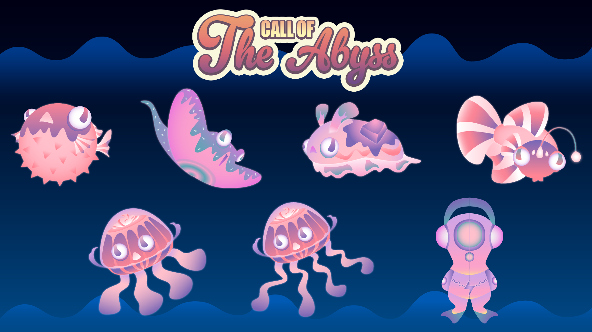

Through this website, we aim to provide the users with information and opportunity not only to participate in this concert, but also contribute to a friendly eco-system through buying merchandise and tickets. Therefore, the concert can be held successfully and the profits can be used to conserve the ocean by planting corals. In addition, the visual identity we created for the website also help serve our event’s purpose.
